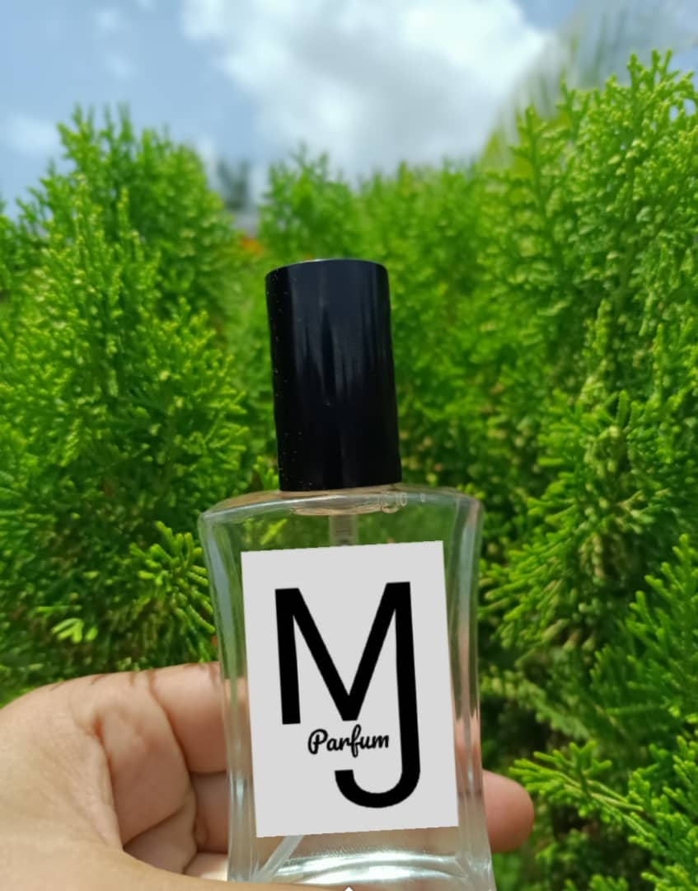
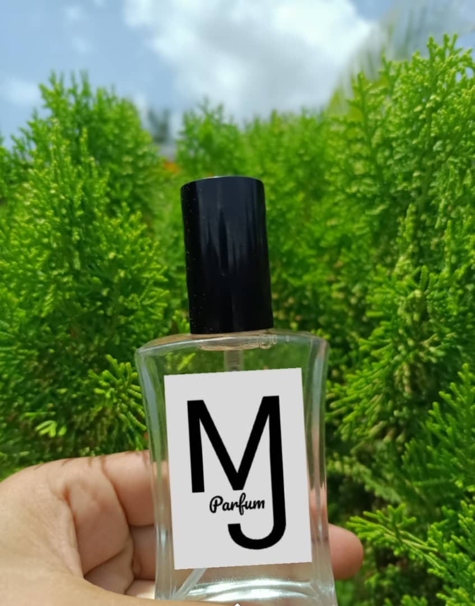

Bienvenido a Nuestro sitio web, aqui podras encontrar toda la información que necesite de nuestros con respecto a nuestros Productos.
Te Ofrecemos Nuestro servicios, nuestra actención necesaria para brindarte toda la información necesaria


 

La fragancia 212 VIP se define por un ron estimulante destilado de caña de azúcar y envejecido en barricas de roble. Esta combinación dulce pero amaderada evoluciona en notas de maracuyá exótica para una fragancia llena de delicioso glamour.
Nautica Voyage es una fragancia fresca y veraniega. Entre sus ingredientes tiene hoja verde, manzana, mimosa empapada, sailcloth, loto de agua, madera de cedro, almizcle, musgo y ámbar. Esta fragancia resalta una rica fusión de musgo húmedo y ambar leñoso refinado, lo que hace que resulte mejor uso a temperaturas frescas.
Silver Mountain Water de Creed es una fragancia de la familia olfativa Aromatica para Hombres y Mujeres. La fragancia comienza con bergamota y mandarina, seguida de un corazón con té verde y grosella negra. La base esta compuesta con Galbanum, almizcle, sándalo y petit grain.
L'Eau d'Issey for Women de Issey Miyake es un perfume floral acuático femenino que te dará la sensación de una primavera rodeada de flores. El perfume se abre con los olores de loto, fresia, melón, rosa, agua de rosas, ciclamen y calona. Las notas medias incluyen lirio, lirio del valle, clavel y peonía acuática.
Light Blue: la quintaesencia de la alegría de vivir y la seducción según Dolce&Gabbana. Toda la esencia de un día soleado de verano encerrada en una fragancia dinámica, fresca, floral y afrutada que evoca la sensualidad de la mujer mediterránea.
La colonia Tommy Hilfiger para hombres fue creada para esas mañanas en las que necesitas un arranque rápido. este aroma masculino presenta las notas complementarias de menta, lavanda y pomelo infundidas con notas especiadas de bergamota y ámbar para crear una experiencia olfativa reveladora.
La Nariz detrás de esta fragancia es Bruno Jovanovic. Las Notas de Salida son zarzamora (frambuesa negra), capullos del grosellero y ciruela; las Notas de Corazón son rosa, orquídea y violeta; las Notas de Fondo son notas amaderadas, sándalo y vainilla.
Paginas con enlaces
Videos
Ubicación
informaciónde Frasco